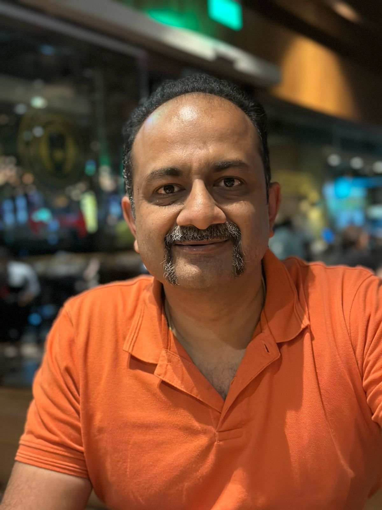
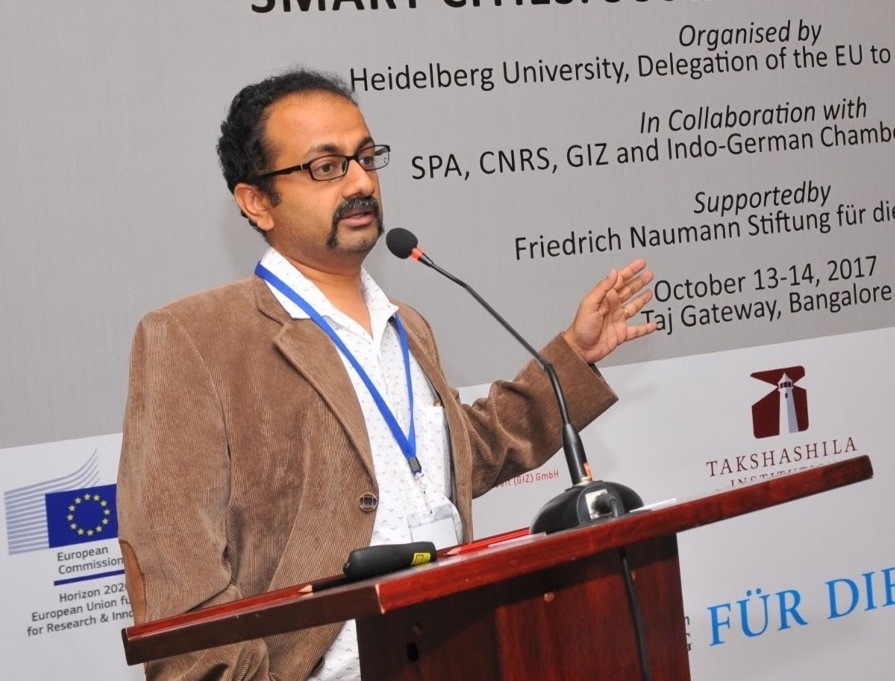
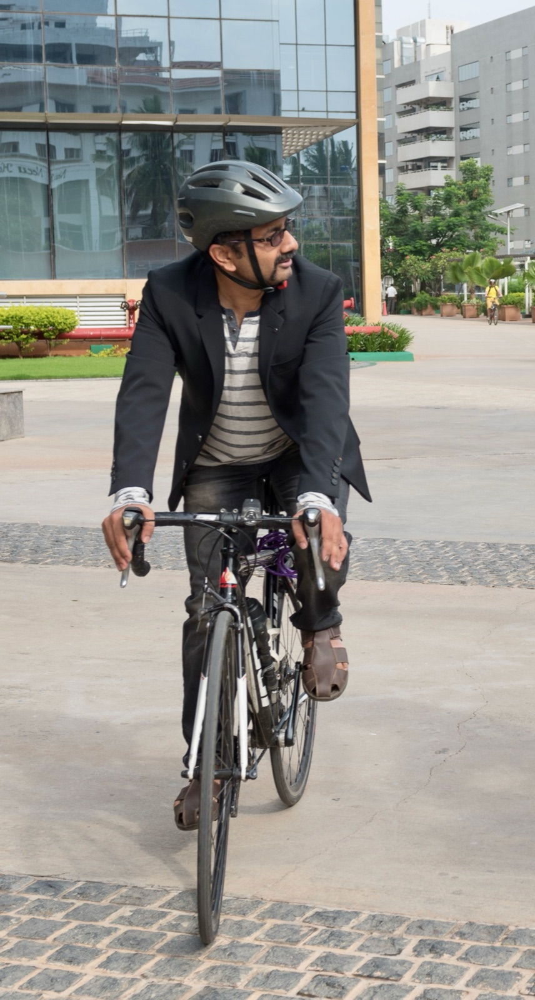
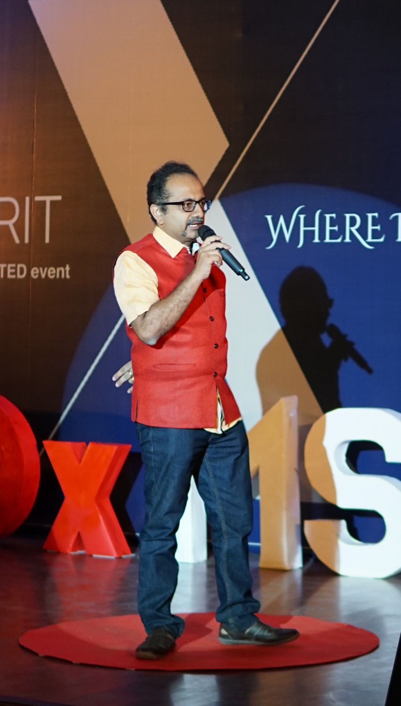
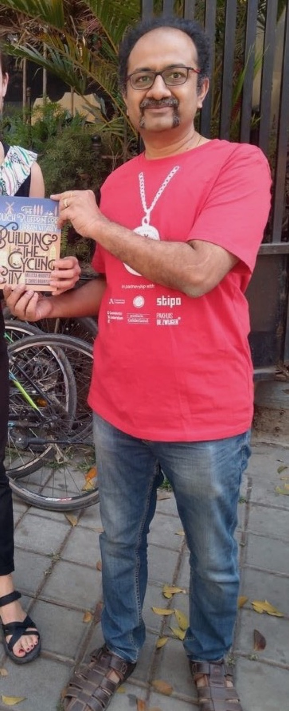
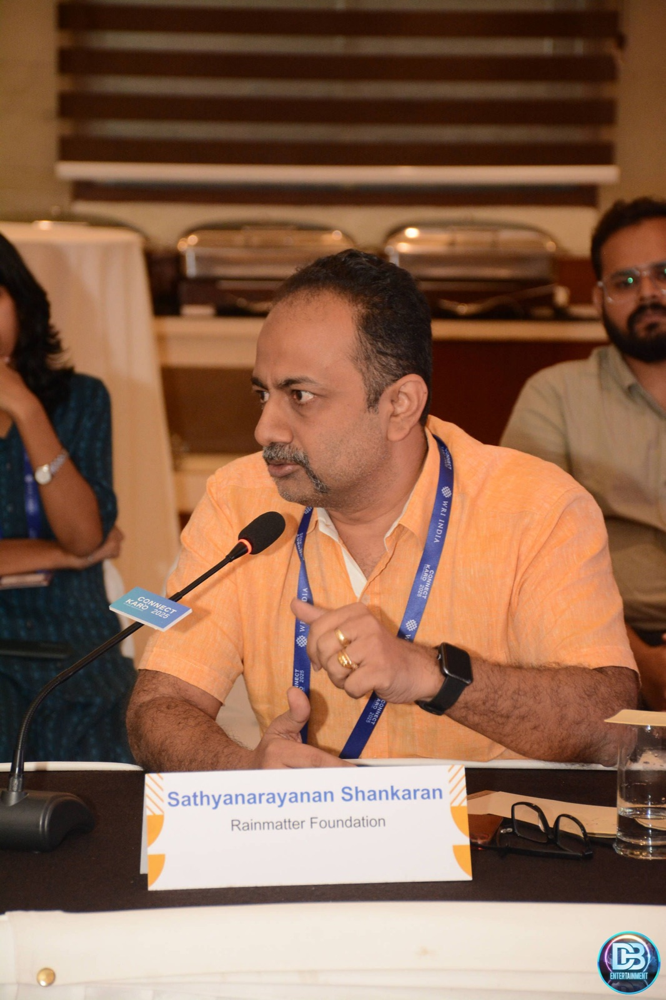
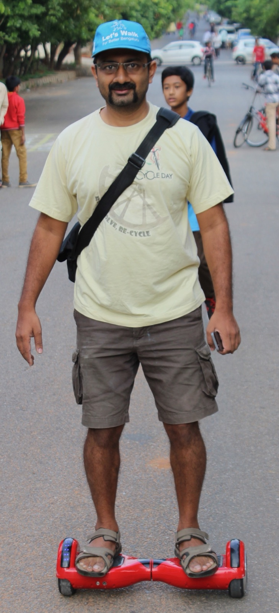
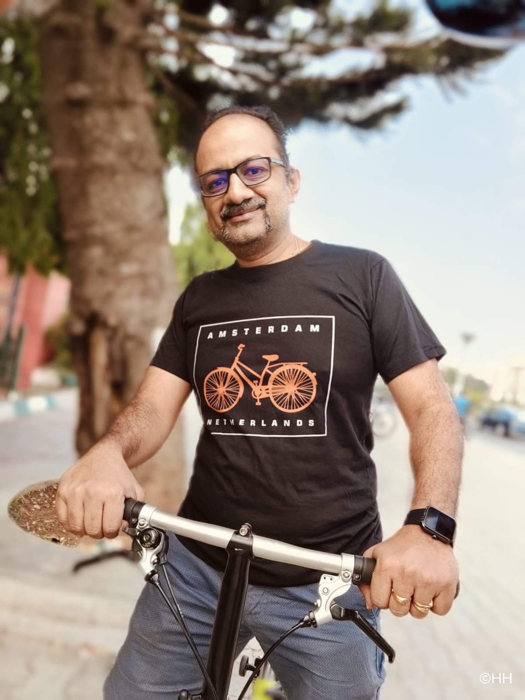
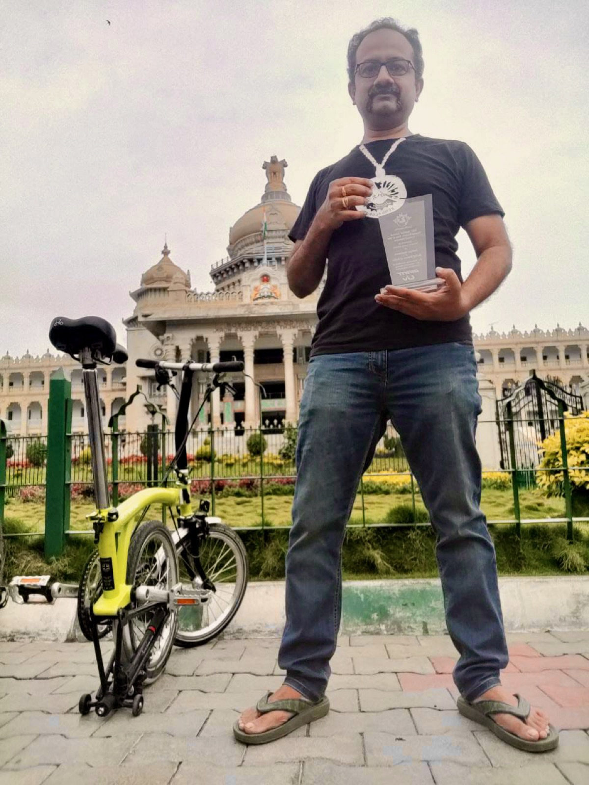

Three decades
arguing with cities:
in code, in policy memos,
and from a bicycle saddle.
Sathya Sankaran. Urban technologist, CEO of Rainmatter Foundation,
Co-Founder of Urban Morph, Bicycle Mayor of Bengaluru,
author of Break the Block, host of the OoruLabs podcast.
Technology professional by training, public policy by postgrad,
social tech consulting by trade.
§01 BUILT FOR THE PUBLIC
Five things I built that you can use right now: free, no login, open source.
FIG. 01 / TOOLOPEN SOURCE
mdshare
Markdown sharing with the widest surface area: paste in the browser, edit from Obsidian, commit from VS Code, or drive it from Claude, ChatGPT, Cursor, Windsurf, Codex & Gemini CLIs via MCP. Four permission tiers, inline threaded comments anchored to text, real-time WebSocket sync, and instant link revocation. Free, no-login, open source.
India's open atlas. 100+ map layers, free to explore. Administrative boundaries from state down to village, wards for 30+ cities, plus rivers, forests, highways, groundwater, floods and seismic zones. Slice any layer and download it as GeoJSON, Shapefile, Parquet or PMTiles, or drop your own geo file and share it by link. Open licences, queryable from AI tools via MCP, no signup, no tracking.
A field guide to the mistakes your mind makes. Describe a decision and Irrational writes an adversarial prompt that argues the other side, refracting your choice through 22 cognitive biases: sunk cost, anchoring, overconfidence. Your own AI runs the audit; nothing is stored. Works as an MCP tool. MIT, no login.
The open sky of India. Name any place and Mugilu reads what the air is doing to you right now: AQI with the full pollutant breakdown and years of life lost, heat and wet-bulb stress, wind, fog, dust, crop-burn smoke, UV, and any live NDMA or IMD warning overhead. Search in Indian languages or use your location, no map needed. Open source, no login, queryable from AI tools via MCP.
Shazam for raagas. Hold your phone to Carnatic music and twelveswaras names the raaga: the top three matches with confidence, the tonic pinned from the tanpura drone, and plain-language cues for training your own ear. Audio is read on the spot and never stored. Free, no login, open source, a CC-BY public good.
Technology professional who took a detour through public policy, and never quite came back.

FIG. 11 Sankaran, S. Primary subject. Bengaluru, IN.
Three decades transforming cities through technology and data-driven solutions in sustainable mobility and energy transition. The unusual mix (a technology background plus a PG in Public Policy) is the whole point: most urban problems aren't blocked by ignorance, they're blocked by the gap between people who can read systems and people who can read the bylaw.
The work itself is in the cards: the open tools up in §01, and the platforms, initiative, book and podcast just below in §04. What stays here is where the time goes now.
Currently
CEO, Rainmatter Foundation. Enabling the increase of climate-resilient places across urban, rural and the wild.
Bicycle Mayor of Bengaluru. Cycling infrastructure and sustainable mobility advocacy.
Also associated with WattsNext Energy, Bioman Technologies, and as visiting/adjunct faculty at Kautilya School of Public Policy and Mount Carmel College.
§04 TRACK RECORD
Two AI-native platforms, an initiative, a book, and a podcast.
FIG. 06 / PLATFORMAT URBAN MORPH
AltMo
500+ t
each bar = 100 t CO₂ avoided
GPS-verified mobility intelligence, double-booked: tonnes of CO₂ avoided for ESG and city-planning ledgers, active minutes for employee wellness. Its data drove a 342% increase in cycling & walking allocation in Bengaluru's Master Plan, helped establish 20+ km of cycle tracks, and won Silvassa Smart City an Excellence in Innovation award. Challenges, leaderboards, and city analytics on top.
COVID-19 cycling response. Volunteers ferrying medicine, oxygen, food across 12 Indian cities. 2021 UN World Bicycle Day Special Award; 2022 Nobel Peace Prize nomination.
The brutally honest playbook for changing your city when you have no power, no money, and no political connections. Twelve lessons drawn from the decade-long Namma Railu campaign: five citizens, ten years, one Union Cabinet approval (2020) for Bengaluru Suburban Rail.
AI-powered services for orchestrating and coordinating urban solutions and accelerating progress at scale, ward to nation. Currently shipping: Active Mobility policy to programs orchestration via cfam.in, district and vertical dashboards for the Karnataka Digital Economy Mission, Neighbourhoods of the Future (notf.in) for citizen-organised hyperlocal action, and digital information synthesis for a range of businesses and public-good initiatives.
India's premier urban-affairs podcast. Long conversations with the people who hold or move levers on cities: Indian transit chiefs, mayors, ward activists, climate scientists, and an Amsterdam Deputy Mayor or Dutch cycling envoy when the question calls for it.
Where the time goes: concurrent, not chronological.
Organisation
Role
Mandate
Rainmatter Foundation
CEO
The job: enabling climate-resilient places. Prepare alt-everything for the climate crisis that is upon us.
Urban Morph
Co-Founder & Director
Full-stack, AI-native urban-tech venture studio in Bengaluru. Ships AltMo, SyntheSYS, and platforms across mobility, governance, and citizen engagement, with government, philanthropic, and corporate partners across India.
Bicycle Mayor of Bengaluru
Civic Responsibility (BYCS)
Advocacy and policy work for cycling infrastructure, road safety, and active mobility. Founding-team member of Cycle Day, India's longest-running community-driven open-streets event: 800+ events over 10 years, run by 80+ community partners.
Also associated
Advisor / Director / Faculty
WattsNext Energy: energy delivery for EVs and built form. · Bioman Technologies: circular-economy waste management. · Visiting / adjunct faculty at Kautilya School of Public Policy (Hyderabad) and Mount Carmel College (Bengaluru).
PLATE I FIELD PHOTOGRAPHY
From the road, the stage, the saddle.
01

02

03

04

05

06

07

08

§06 CONTACT / CHANNELS
Open to collaboration on cities, mobility, climate, and the messy middle.
For collaborations, talks, podcast invites, advisory work, and book-related queries: a DM on any of these channels is the best route. Replies generally same-week, sometimes from a moving train.